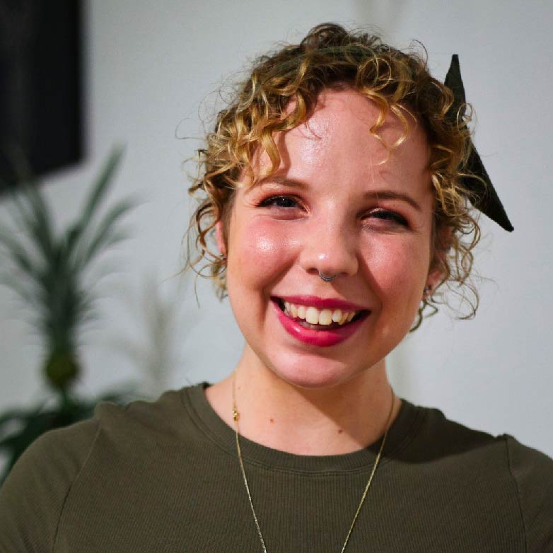

The field of child-robot-interaction (CRI) is a fast growing subfield of human-robot-interaction (HRI), with a multitude of potential contexts and applications. Designing and conducting successful CRI studies often requires input from several different areas, necessitating interdisciplinary collaborations. Understanding how to transcend disciplinary boundaries is therefore a core skillset required of child robot interaction researchers. However, establishing such collaborations is not always straightforward, and can lead to difficulties with consolidating definitions, measurement techniques, and experimental design.
The goal of this workshop is therefore to bring together researchers from different subfields of CRI (e.g., engineering, computer science, psychology, communication science, linguistics, interaction design and media) and application domains (e.g. education, (mental) healthcare) to be able to share insights and advice regarding the design, implementation, and analysis of CRI studies.
Important dates
- February 13, 2023 Submission deadline
- February 27, 2023 Acceptance notification
- March 6, 2023 Publication abstracts
- March 13, 2023 Workshop
Outcomes
The workshop will open with a panel discussion involving researchers from different disciplines with CRI. We have four confirmed panelists, including Dr Kristyn Sommer from Griffith University, Australia; Dr Emilia Barakova from Eindhoven University of Technology, Netherlands; Dr Barbara Bruno from École Polytechnique Fédérale de Lausanne, Switzerland and Dr Denise Geiskkovitch from McMaster University, Ontario, Canada. Between them, their research expertise spans developmental psychology, interaction design, robotics and control, and computer science. The panel discussion will be followed by 3-minute flash talks of the accepted paper abstracts. These flash talks are intended as a starting point for later discussions during the workshop. The second half of the workshop will be dedicated to breakout discussion groups. The breakout groups will divided into two parts; in the first half, participants will discuss challenges they have experienced, or are concerned about, when conducting CRI studies. In the second half, groups will discuss potential solutions to these challenges. The workshop will conclude with all participants coming together and each group presenting a short list of identified challenges and proposed solutions. The discussions need not be tailored to specifically experimental user studies, and can also include theoretical and ethical reflections on the field of CRI as a whole. We hope that some of the ideas fostered in this workshop will encourage both current and future CRI researchers to think critically about the design, measurement, and ethical implications of child-robot-interaction, and work together towards developing and sharing resources which can benefit the community as a whole.
Want to know more about the outcomes of this workshop? Visit the dedicated Outcomes page.
Participation
We will open the registrations soon! Stay tuned.
Program
Topic
Time (CET)
Time (TBD)
General Introduction
12:00 - 12:10
Panel Discussion (incl. QA)
12:10 - 13:00
Coffee Break
13:00 - 13:15
Flash Talks
13:15 - 14:00
Break-out 1: Identifying key challenges
14:00 - 14:30
Coffee Break
14:30 - 14:45
Break-out 2: Brainstorming solutions
14:45 - 15:15
Group Pitches
15:15 - 15:55
Conclusion by organizing committee
15:55 - 16:00
Submission
Please read below what you need to know before you submit your abstract.
Topics
Potential topics for submission include, but are not limited to:
- Quantitative and/or qualitative research methodology to assess child-robot relationship formation;
- Theoretical reflections on the conceptualization and/or operationalization of relationship formation;
- Ethical reflections on settings and methods in/by which to assess child-robot relationship formation;
- Design and technical implementation (WoZ, autonomous, or semi-autonomous) of robot systems and CRI scenarios.
Format
Participants will be invited to submit a 250 word abstract focusing on the central topic of interdisciplinary research in CRI. All submissions should include a reflection on key challenges in conducting CRI research (either from an empirical or theoretical/ethical viewpoint). Study proposals which fit the theme of the workshop will also be considered. Submissions will be accepted based on the originality, clarity, and relevance of their contribution. At least one author must register and attend the workshop, if accepted. Please submit your abstract via this form (https://forms.gle/mFvX9CdD57UjU12w6). Accepted submissions will be published in advance on the workshop website, which participants will be asked to read and prepare questions / discussion points for the breakout sessions.
During workshop
This half-day workshop aims to bring together CRI researchers and stakeholders across disciplines to discuss qualitative and quantitative methods that can be used to capture concepts relevant to the process of child-robot relationship formation. In addition, key issues in the field will be identified and discussed from an interdisciplinary perspective, and potential solutions will be brainstormed.
Want to join the workshop?
Date: March 13th (afternoon)
Registration will open soon!
Invited Panelists
We are very happy to announce that during the workshop, we will have a panelist discussion by Dr Kristyn Sommer from Griffith University, Australia; Dr Emilia Barakova from Eindhoven University of Technology, Netherlands; Dr Barbara Bruno from École Polytechnique Fédérale de Lausanne, Switzerland and Dr Denise Geiskkovitch from McMaster University, Ontario, Canada.
Kristyn Sommer
Panelist
GU Postdoctoral Research Fellow, Griffith University
Dr. Kristyn Sommer holds a PhD in developmental psychology from the University of Queensland, Australia. She is currently an awardee of the Griffith University Postdoctoral Research Fellow Award at Griffith University, Australia. Dr. Sommer is an expert in child-robot interaction, specifically focusing on early childhood cognitive, social, and emotional development with social robots. She has worked in interdisciplinary teams throughout her career including teams comprised of roboticists, computer scientists and linguists. In her work on children’s learning from social robots, she identified a “robot deficit” in imitation and word-learning from robots (relative to human models) between 1- and 6-years-of-age. Furthermore, her research identified a relationship between children’s level of social, emotional, and physical engagement with social robots and their learning from social robots. Dr. Sommer is currently exploring how the individual differences in children’s engagement with social robots influencing learning and how we may be able to remediate this challenge for children and social robots. Dr. Sommer is an Associate Editor at the Journal of Experimental Psychology: Applied, is an avid science communicator on child development (reaching between 1 and 5 million eyes a month across social media) and has won national and international awards for science communication.
Emilia Barakova
Panelist
Assistant professor, Eindhoven University of Technology
Emilia Barakova holds a Ph. D. degree from the University of Groningen, The Netherlands, and a master’s degree from the Technical University of Sofia, Bulgaria. She is currently affiliated with the Industrial Design department and is the head of the Eindhoven University of Technology's Social Robotics Lab. She previously worked at the Riken Brain Science Institute in Japan, the German-Japanese Robotics Research Lab in Japan, the University of Groningen, The Netherlands, and the Bulgarian Academy of Sciences. Barakova is an expert in the field of embodied social interaction with and through technology, social, and cognitive robotics. She has specialized in combining methods from cognitive sciences, robotics, and computational intelligence to model social behavior. Her current research focuses on using social robots for children with ASD, social robots for education, and for improving the well-being of persons with dementia and with intellectual disabilities. Barakova has served as program chair of several conferences on Social Robotics and Artificial intelligence and is an Associate Editor of the International Journal of Social Robotics and editor of Personal and Ubiquitous Computing, Interaction studies, and Transactions of Human-Machine Systems.

Barbara Bruno
Panelist
Post doc Research Fellow, EPFL
Barbara Bruno is a post-doc researcher at the École Polytechnique Fédérale de Lausanne (EPFL), in Lausanne, Switzerland, deputy head of the CHILI lab, with research interest in Socially Assistive Robotics and Human-Robot Interaction. She is co-founder of the start-up company Teseo, Italy. Barbara received the M.Sc. and the Ph.D. in Robotics from the University of Genoa in 2011 and 2015, respectively. She is part of the Swiss nationwide NCCR Robotics organisation and the Swiss-French research project iReCHeCk. In 2017-2019 she was Technical Manager of the H2020 project CARESSES, and she has been Visiting Scholar at Örebro University (Sweden), with the Italian-Swedish project WEARAMI. She has published more than 50 articles in international journals and peer-reviewed international conferences.
Organizing Committee

Rebecca Stower
KTH Royal Institute of Technology, Sweden
Mike Ligthart
Vrije Universiteit Amsterdam, NLMicol Spitale
University of Cambridge, UK